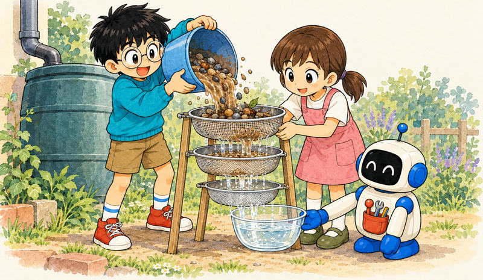
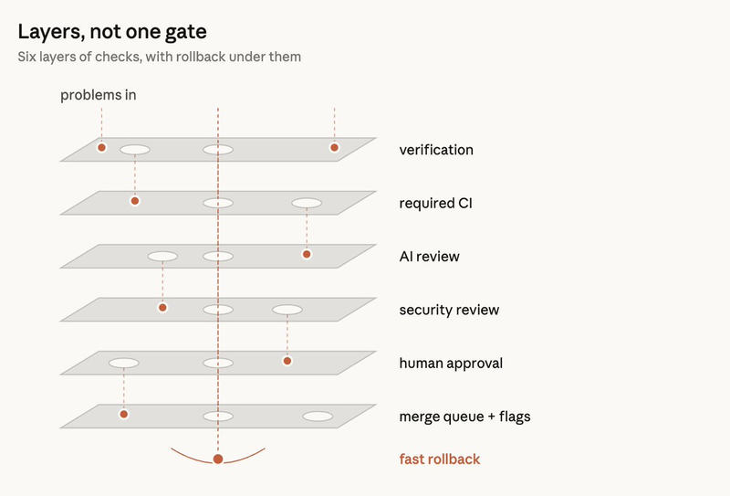
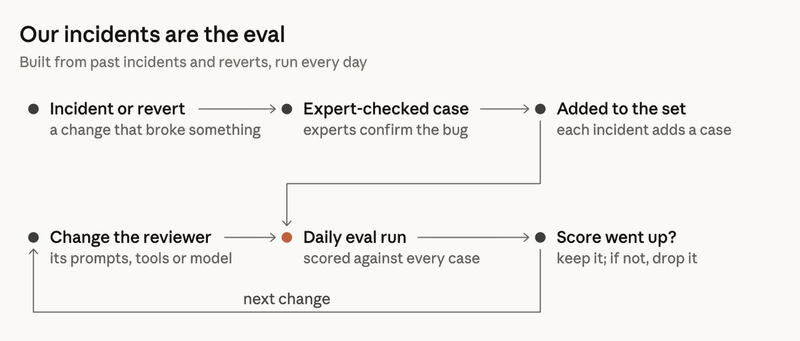
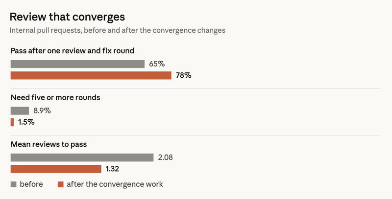

Feature 03 · ARTICLE · 2026 10
How the Claude Code team does code review
Claude writes about 90 percent of the code for Claude Code, so we can’t read every line by hand. We didn’t stop reviewing. We automated most of the reading, tuned it to save human time, and made mistakes quick to undo. Between June and September, merged pull requests more than doubled while the share that had to be reverted fell by more than 40 percent. Claude catches most routine bugs before a human looks; people keep the risky parts and the responsibility.

What review is for
Code review has two purposes: catching bugs before they ship, and building a shared understanding of the codebase. In our monorepo, changes merged per day went from about 2,500 in May to over 30,000 in September. Line-by-line reading can’t keep pace. So instead of asking “did someone read the code?”, we ask what could go wrong with this change and which check, automated or human, should catch it.
Review also moved earlier. It’s less a gate after the PR and more a spellcheck while writing.
Human time has two sides: the hours spent reviewing, and the hours spent fixing bugs that bad code introduces. Cutting the first without the second saves nothing. Our goal is that most PRs in the Claude Code repos merge with at most one person in the loop, who could be the author, without more reverts or incidents. We track median and 95th-percentile human approvals per PR, human comments, and how long a PR waits on a person. Revert and incident rates are the guardrail: if they rise, we haven’t reduced human time, just relocated it.
The layers

Each layer catches some bugs and misses others. Few bugs get through all of them, and those that do meet a rollback.
Before the PR. Most review happens here. We ask Claude to show a result (tests, the build, a screenshot against the design) instead of saying the task is done, and a subagent with fresh context reviews the diff. Boris Cherny, who created Claude Code, estimates that a verification process improves the quality of Claude’s output by a factor of two to three. When the reviewer keeps flagging the same issue, we fix it at the source: the skill, a lint rule, CLAUDE.md, or REVIEW.md, where code owners tell the reviewer what matters.
AI review on every PR. Claude checks the diff against the whole codebase and the author’s stated intent, and looks for the root cause of bug fixes. Agents hunt for bugs in parallel, a vote filters out false positives, and style-only findings are dropped. Every finding must be fixed or resolved with a reason. Since the research preview, the share of internal PRs getting substantive comments has gone from 16% to 54%.
Security review. No PR merges while a finding is open.
Blocking checks. Lint, type checks, tests on all platforms, build. The PR template asks how the change was tested and how to revert it.
Human approval, scaled by risk. A classifier sets the tier from the change, not the author. Sensitive paths and CI workflow files always need another approval. Agent approvals don’t count as human ones. If an agent authors a PR, its operator is always a required reviewer, and an untrusted new commit means reapproval.
Merge queue, flags, staged rollout. Checks run on main with the change applied. Features ship behind flags to Anthropic employees first, then to the latest channel, with stable trailing behind.
Rollback. Flagged changes can be turned off without deploying. Incident reviews ask which layer should have caught the problem. We don’t yet have circuit breakers that adjust approval requirements based on revert and incident rates, but we’re looking into it.
Making the reviewer better


Our incidents are the eval. Engineers who know the codebase verified the location and correctness of each bug in incident-causing PRs, and the review system is scored daily against that collection. Every incident joins it. To measure noise, we record how people handle each comment (fixed, rejected, intentional, didn’t matter) and run the reviewer on PRs we know are clean.
Noise costs more when the author is an agent. A human dismisses a nit in a second; an agent makes another commit, which triggers another review. One CLI PR cycled more than fifty times overnight between agent author and agent reviewer before someone stopped it by hand; it could have gone on indefinitely. Git blame showed that about 59% of what the reviewer kept flagging had been there since the first pass: it was rarely finding new bugs, only a few more old ones each cycle. Our habit of running several cycles by default made this worse. Re-review now asks the author to rethink the approach after three cycles, looks only at the diff after the first rounds, names the class of bug so the author fixes every instance, and doesn’t re-report known issues.
What humans still do
Decide whether to build something at all: vision, taste, goals.
Audit dangerous code: billing, the auto-updater, CI workflows.
Review architecture, since those choices set the conventions others follow.
Verify proofs. If you can’t describe what the checks would miss, don’t ask for a 👍; you need a real review.
Take responsibility. A person answers for every change that ships, whoever typed it.
Learning the code
If machines do most of the reading, how does anyone learn the codebase? We have no formal mechanism. No one on the team holds a full mental model of Claude Code, and we don’t think anyone needs to. To learn a slice, people ask Claude for an explainer; it takes a few minutes and is always up to date. Reading a one-line copy change teaches you very little; an explainer of the module you’re about to change teaches you a lot. We also work in open Slack channels by default.
You land it, you own it
If you merge a small or medium change and something goes wrong, you usually fix it yourself. This doesn’t spiral because changes are small, nearly everything can be reversed in minutes, blast radius sets the bar, telemetry and internal use surface regressions quickly, and incident reviews consider the system rather than assign blame.
Because code is cheap to write, closing a PR when someone in the channel points to a better path doesn’t feel like a loss. The key is to pivot early in the thread.
Where this is headed
Code Review for Claude Code only posts findings; a human still makes the final approval. In our own repos, owners are deciding which low-risk changes can merge automatically when the checks pass, and that boundary will keep moving. When the reviewer misses something, we ask what wasn’t in the model’s context and turn it into a CLAUDE.md entry, a skill, or a new check. The goal hasn’t changed: less human effort per change, with a revert rate no higher than it is now.